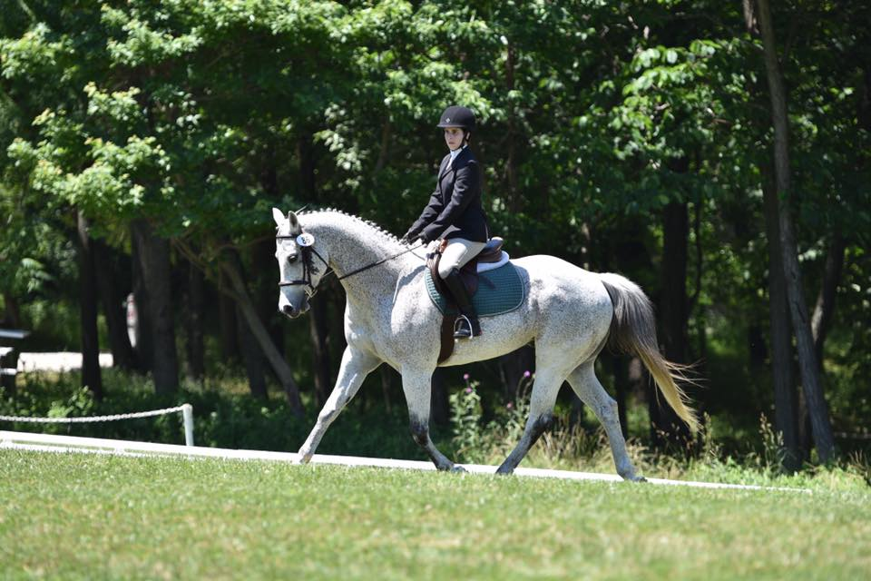
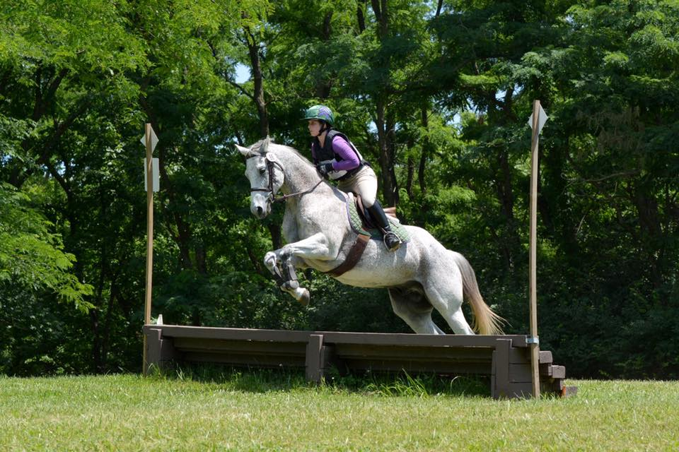
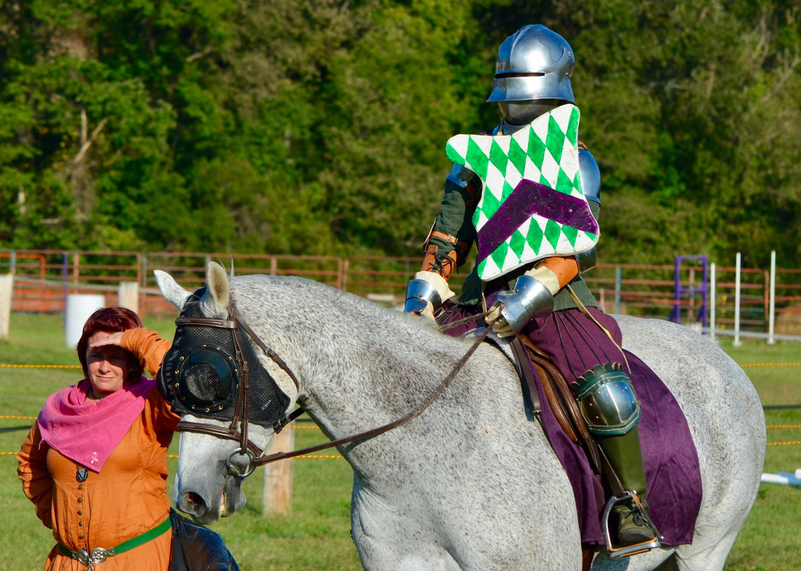

Physical Characteristics
Rigel is 15.3 hands high. His coloring is fleabitten grey with dark points. His mane and tail are dark grey. He has a dark mark on his left cheek.
2005 Appendix Quarter Horse Gelding
By Ebony Kisses & Out of Vanilla Lace
Rigel is 15.3 hands high. His coloring is fleabitten grey with dark points. His mane and tail are dark grey. He has a dark mark on his left cheek.
Originally trained for Western Dressage, Rigel now has skills as a Hunter/Jumper, for Eventing, Dressage, and Medieval Reenactment.
Rigel has schooled up to 2'6" jumps but is most comfortable now at 2'. He has competed at the Starter level at several local Events. He has a Champion ribbon from his first Hunter show. His Dressage skills are coming along at Intro level. He has been used for Mounted Archery, Foam Jousting, Medieval Games, and Mounted Combat with foam weapons.
